Custom hardware / University of Minnesota / 2023
Wearable Cardiac Monitor
Custom electronics for optical pulse sensing.
I designed custom sensing hardware and power electronics for a wearable cardiac-monitoring prototype at the University of Minnesota. Named aWear, the team project explored optical pulse sensing in a small device intended to sit beneath an ordinary wristwatch.
My work connected circuit design, power management, and physical integration. I shared hardware development with a teammate and collaborated with the algorithm and firmware team, with biomedical input on sensing and wearable use.
The 2023 project brought together a four-layer, 35 mm board, a printed enclosure, PPG signal processing, and a prototype interface for reviewing readings. The repository preserves the design files, firmware, interface, and original evaluation material.
Designed to be worn
The prototype combines a circular enclosure, an exposed optical sensor, and a rechargeable battery. The photos show the populated sensing board, the central sensor opening in the enclosure, and the assembled prototype on a wrist.
Enclosure thickness, sensor contact, and battery placement were part of the engineering problem. The final presentation identifies comfort and further miniaturization as remaining work.
Custom electronics
My contribution centered on the hardware: fitting sensing, processing, charging, and status indication onto a four-layer board only 35 mm across. The project explored STM32WB and STM32L4 configurations, with the manufactured L4 revision documented in the presentation.
The board and enclosure had to work together. Accessible ports and buttons support development, while the sensor opening allows contact with the wearer. The repository includes the Altium schematic and fabrication outputs for the board revisions.

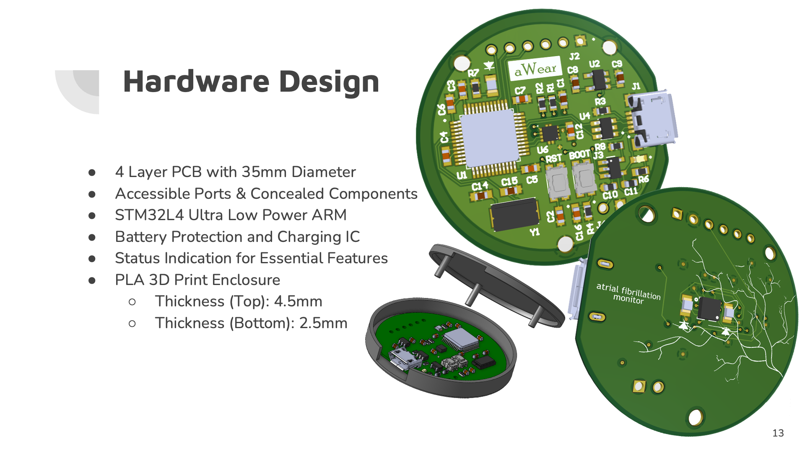
Power and parts
The design balanced optical sensing and processing against the space available for a battery. The presentation compares component current budgets and includes a photograph of the powered board under bench measurement.
The 2023 parts estimate was approximately $43 including a battery. Battery-life figures in the slides are configuration-dependent estimates, not a measured endurance guarantee; wireless and wired configurations have different power requirements.

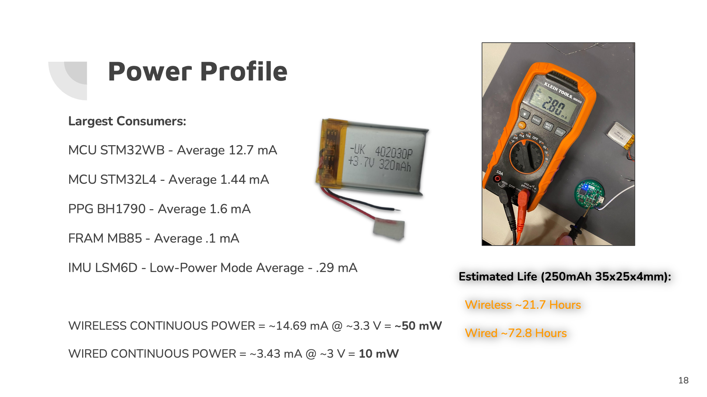

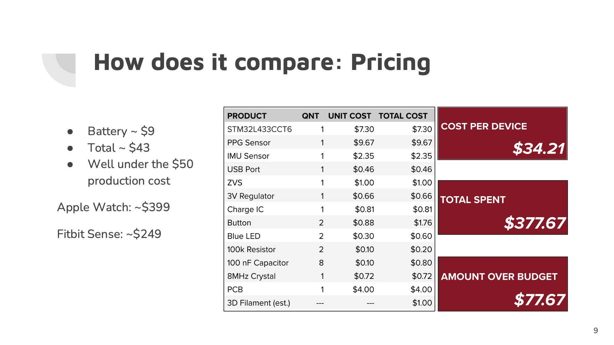
From sensor to interface
The team developed STM32 firmware for sensor acquisition and explored Bluetooth Low Energy communication. The development photograph shows the sensor modules connected to a development board; the phone log records a characteristic update during testing.
The prototype web interface gives readings a place to be reviewed: an explanation view and a calendar of recorded events. These screens document the interface concept, with further work on wireless integration and the user experience identified in the project poster.

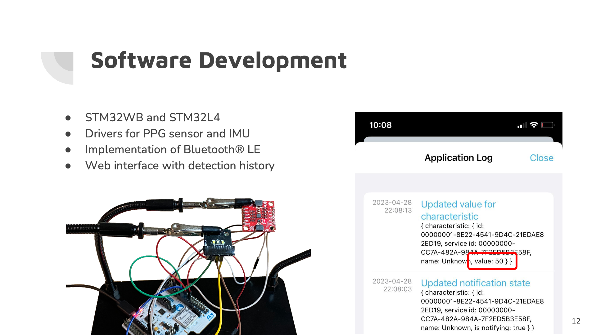

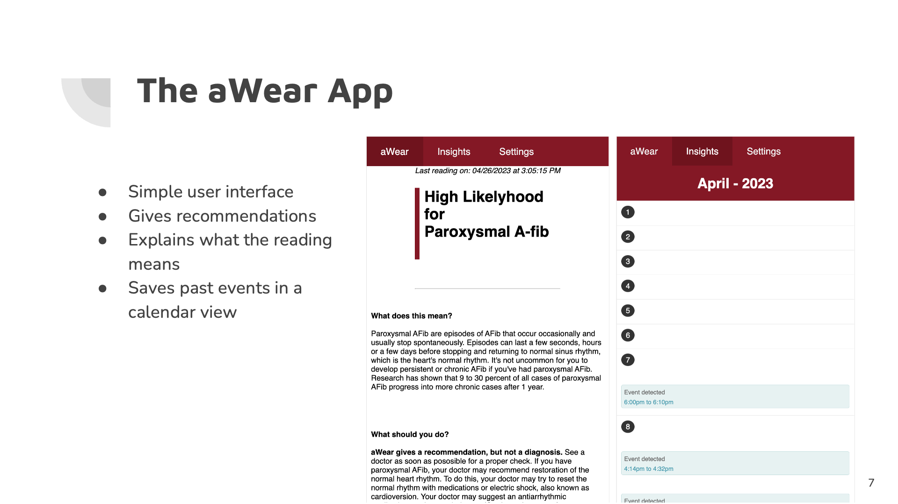
Processing the optical signal
The detection pipeline starts with photoplethysmography (PPG), measuring changes in reflected light. The presentation describes collecting samples every 32 milliseconds after sensor contact, then applying a single-pole low-pass filter to a 500-sample window.
Peak detection uses the derivative of the filtered signal. The algorithm evaluates variation between pulse intervals and the turning point ratio, combining thresholds to classify the recorded signal. The figures show the team's signal-processing work supported by the custom hardware.

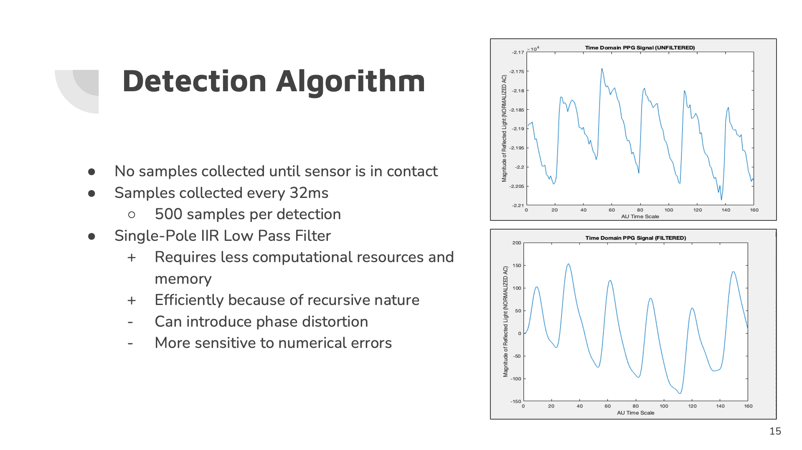

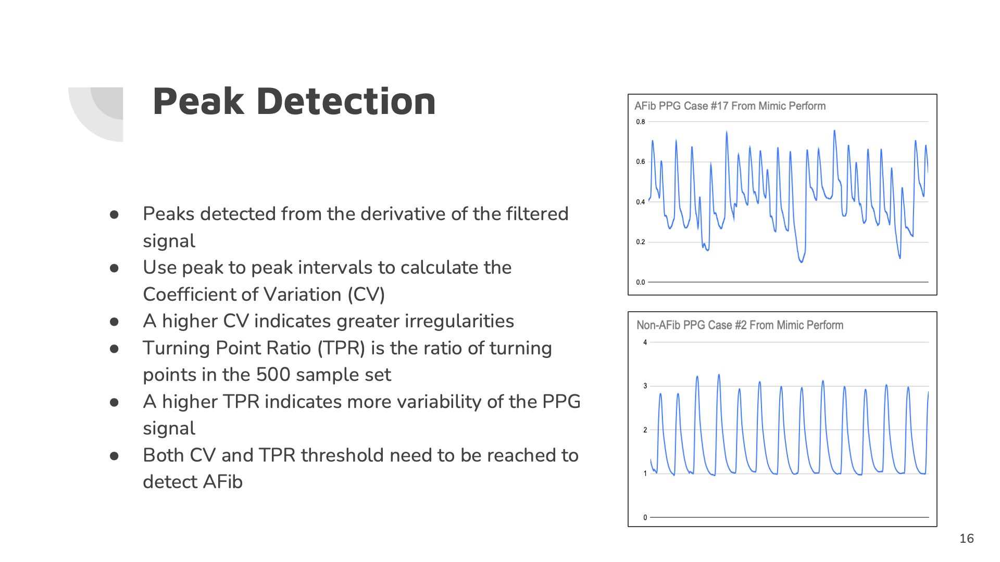
Evaluation and remaining work
The team evaluated the algorithm using recorded PPG examples and documented classification counts, example thresholds, and comparisons in the final presentation. Noisy optical data, false positives, and reliable sensor contact remained important challenges.
These are student prototype results, not clinical validation. The original comparison slide and the classification-count chart report different summaries, so a single accuracy claim is not used here. The commercial-device figures also come from separate evaluations and are preserved as historical presentation material.

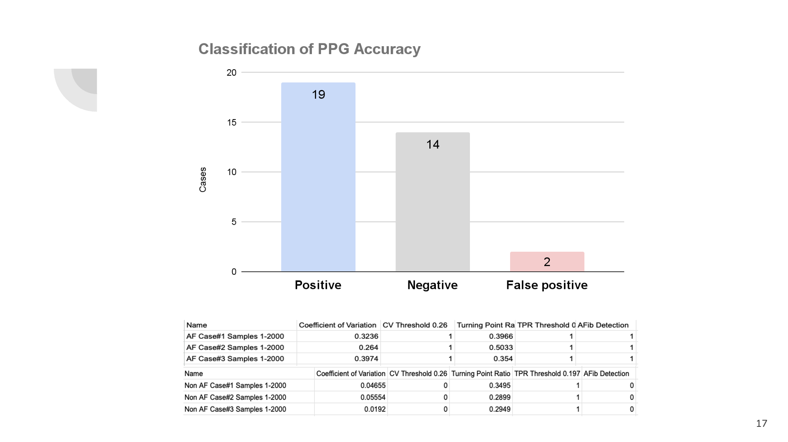

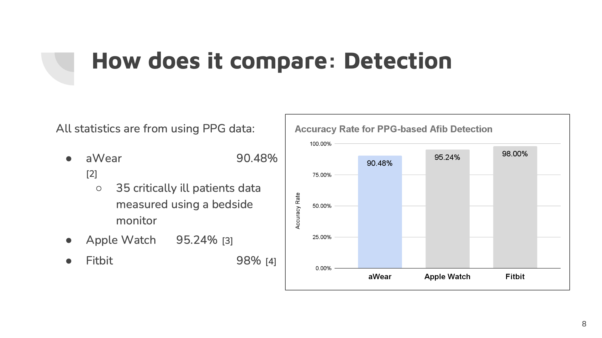
Project record
The senior design poster brings the hardware, software, results, and design limitations together. It also records the project timeline and feedback from ECE and biomedical engineering faculty.
My role focused on custom hardware, alongside teammates working on electronics, detection algorithms, and firmware. The original poster includes the full team credits.

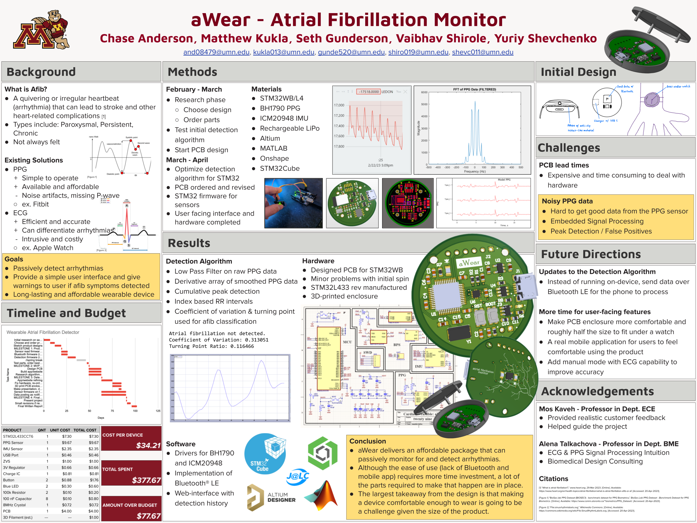
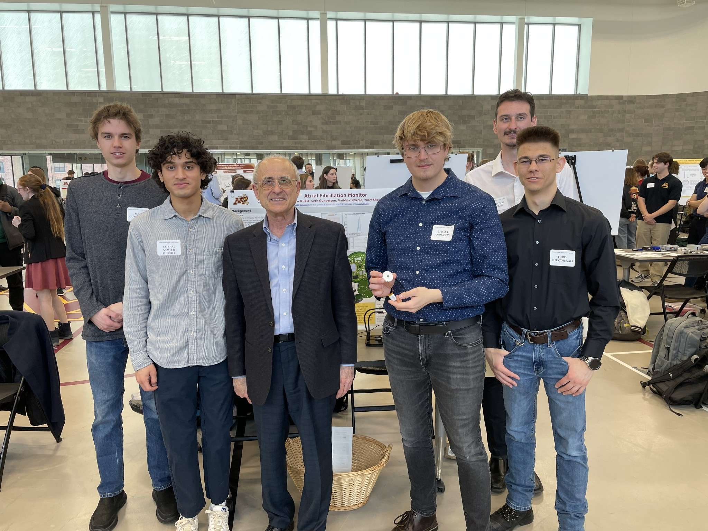
The team presenting the wearable cardiac monitor at the University of Minnesota.
Design files and source
The original repository contains the project documentation and development work.